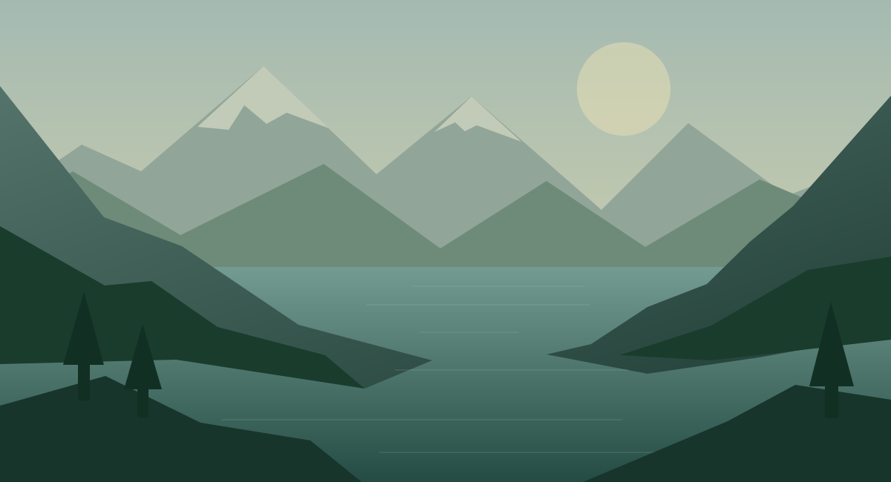
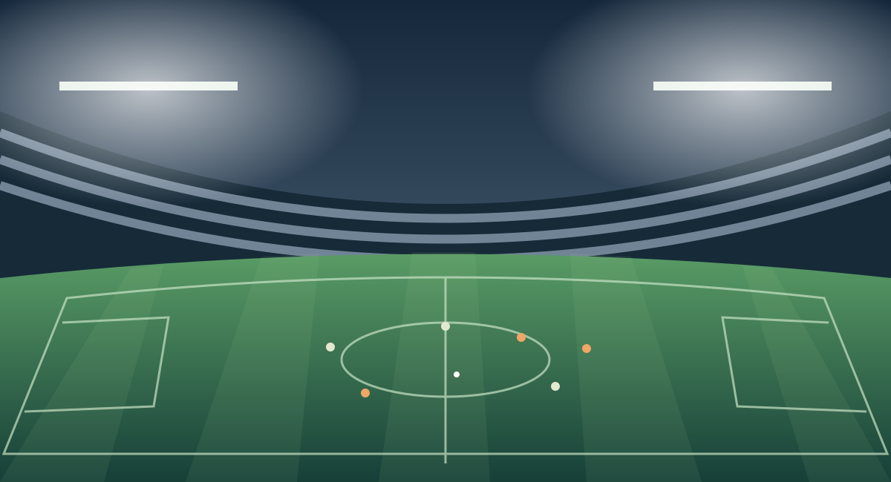

Пауза без спешки
Отвлеклись на звонок? Поставьте эфир на паузу и продолжите с сохранённой точки. В архиве можно вернуться к уже прошедшим передачам.
На каналах с поддержкой архива у провайдера
Смотрите матч рядом с фильмом. Возвращайтесь к пропущенному. Сохраняйте любимое. Эфир, архив и ваши видео — в одном плеере.
Android 8.0+ · 8,7 МБ · Подключите свой IPTV-источник


21:00 По тропам Алтая
22:00 Океан изнутри
Интерактивная иллюстрация возможностей. Каналы и видео приведены для примера.
Не выбирайте между решающими минутами матча и передачей, которую давно хотели посмотреть. Оставьте второй просмотр в малом окне и меняйте их местами.
Для двух потоков ваш источник должен разрешать одновременные подключения.
Включайте сейчас, возвращайтесь позже или сохраняйте себе. Glass IPTV подстраивается под ваши планы.
Отвлеклись на звонок? Поставьте эфир на паузу и продолжите с сохранённой точки. В архиве можно вернуться к уже прошедшим передачам.
Запишите эфир сразу или запланируйте запись будущей передачи. Продолжайте смотреть другой канал — запись работает независимо.
Открывайте сохранённые передачи и свои видео из одной папки. Пауза, перемотка и выбор дорожек — всё уже под рукой.
Соберите любимые каналы в свои группы. Кино из одного источника, спорт из другого — переключайтесь между ними, оставаясь в «Моём плейлисте».
Группа · На вечер
Иллюстрация подборки из разных источников
Удерживайте OK на канале: добавьте его в избранное или группу «Моего плейлиста». Для текущего канала добавление доступно и в панели инструментов.
Настройки → Мой плейлист: создавайте, переименовывайте и удаляйте группы. В меню канала меняйте его порядок и перемещайте между группами. Удаление из подборки сохраняет исходный канал.
Выберите будущую передачу в телегиде или списке программ. Поставьте напоминание, запланируйте запись — или сделайте и то и другое.
NATURE · 20:00–21:00 · 60 минут
Ваши передачи и видео. Откройте, когда захочется.
В приложении — окно по центру. В фоне — уведомление.
NATURE · Сегодня · 22:00–23:00
Все будущие записи перед глазами. Планы можно отменить.
← → переключают вкладки из любого места панели
Иллюстрация · попробуйте вкладки и стрелки клавиатуры
Меняйте название, адрес и данные подключения. Настраивайте обновление каналов и EPG отдельно для каждого источника. Всё нужное — внутри его подменю.
Телегид показывает три часа, а стрелки выбирают соседние передачи. На телефоне доступен экранный пульт в горизонтальном режиме.
В телегиде — выбрать передачу
В инфопанели — выбрать позицию
Удержать — записи и планы
Удержать — инструменты
В списке каналов — избранное или группа
Glass IPTV — плеер. Каналы не включены: используйте свой плейлист или доступ от IPTV-провайдера.
Установите на Android 8.0 или новее. При первом запуске выберите русский или английский язык.
Укажите M3U-плейлист или данные Xtream Codes. Для телегида при необходимости добавьте XMLTV.
Откройте любимый канал, попробуйте PiP или запланируйте запись на вечер.
Приложение не продаёт и не предоставляет каналы. Нужен ваш M3U-плейлист или доступ Xtream Codes. Условия доступа, программа передач и архив зависят от выбранного источника.
Android TV, Google TV и телефоны с Android 8.0+. На телефоне приложение работает в горизонтальной ориентации с экранным пультом. Поддержка форматов зависит от устройства и декодера.
Для PiP с двумя телеканалами источник должен допускать одновременные подключения, а устройство — справляться с двумя видео. Можно сочетать эфир с локальным видео. Пауза эфира и просмотр прошедших передач доступны на каналах с архивом провайдера.
Выберите будущую передачу в телегиде или списке программ. На Android 12+ может понадобиться разрешение на точные таймеры. Устройство должно быть включено, поток и папка — доступны. Фоновые ограничения Android могут влиять на запуск; после принудительной остановки приложения запись не гарантируется.
По умолчанию — Movies/GlassIPTV. Можно выбрать другую доступную папку, в том числе USB. Одновременно записывается один канал. Запись поддерживает прямой MPEG-TS и незашифрованный HLS с TS-сегментами; воспроизведение ваших файлов зависит от поддержки их формата.
Ваши каналы. Ваши записи. Ваш способ смотреть.